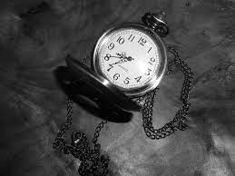
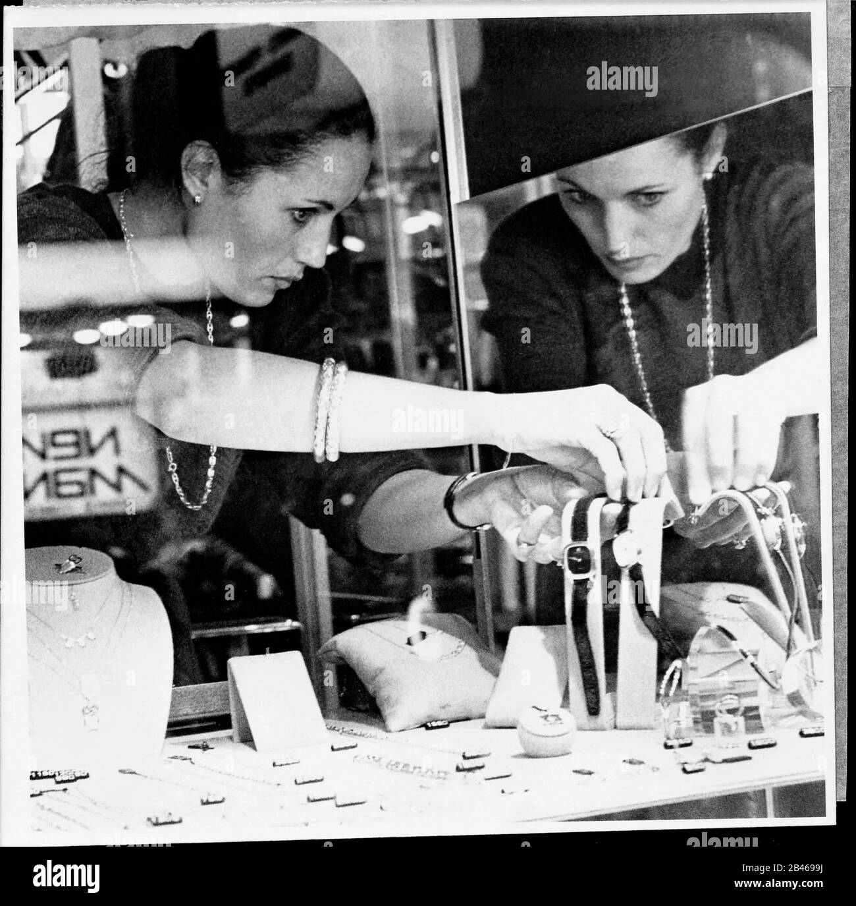
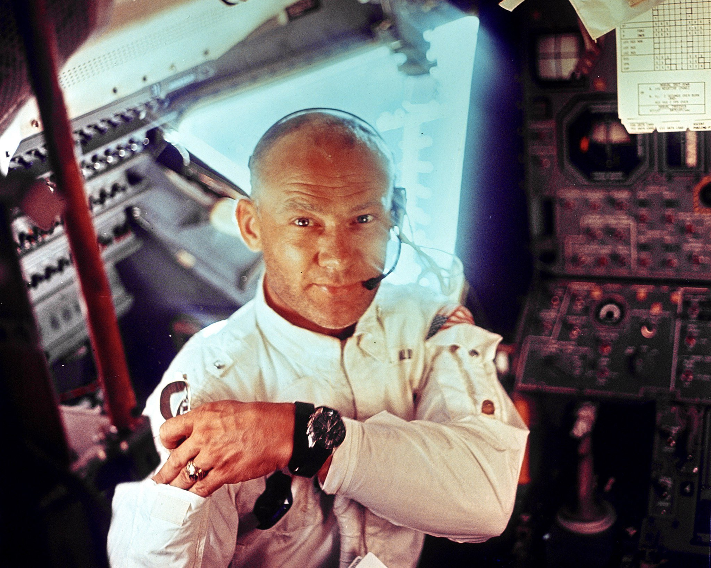
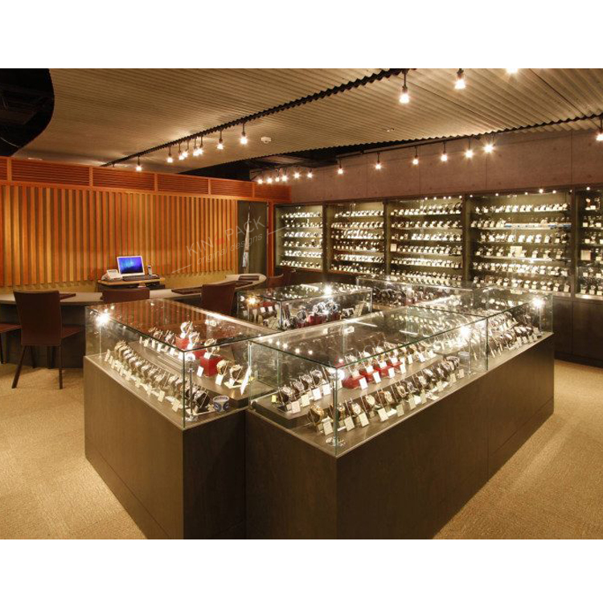

Explore la colección de prestigiosos relojes Bertolex de alta precisión.
Bertolex proporciona una amplia selección de relojes profesionales y clásicos,
para adaptarse a cualquier muñeca. Descubra la gran
selección de relojes Bertolex: una perfecta combinación de estilo y funcionalidad.
Para seguir la visión de nuestro fundador, Alberto
De lope, seguimos prestando nuestra ayuda a los
pioneros entre nosotros. Los hombres y mujeres que,
en su época, dejaron huella y continúan dejándola en la
actualidad. Las décadas de experiencia acumuladas en
sus muñecas no dejan de inspirar nuestro trabajo como
relojeros. Dentro de nuestros talleres, donde
concebimos todos nuestros relojes, cada uno de ellos
se somete a pruebas en cada paso de la fabricación
para que cumpla nuestros criterios superlativos.
Requiere mucho tiempo pero, para nosotros, lo mejor
siempre puede y debe mejorarse. Por tanto, mejoramos
la hermeticidad de nuestros productos al desafiar
constantemente nuevas profundidades. Aumentamos
su robustez perfeccionando nuestro dominio de los
materiales y los métodos de producción.
Incrementamos su precisión y autonomía inventando
sin cesar nuevas generaciones de movimientos.
Inicos de la marca. 1899
Primer reloj de la marca
Primera Fabrica. 1910
Primera tienda. 1945
Encargos publicos. 1953
Conquistamos la luna. 1969
Atravesamos el oceano 1986 (America)
Crecimos. 1994 (Belgica)

Llegamos a suiza. 2017
Mejor Reloj Del Mundo. 2020
Levantamos el velo sobre partes con la esperanza de que pueda
comprender lo que
hace que un Rolex sea realmente único. Su calidad
superlativa. Su rareza. Su fiabilidad inquebrantable,en
cualquier circunstancia. Porque cada reloj Bertolex es la
expresión por excelencia de lo que nos esforzamos por
conseguir, perpetuamente: la excelencia relojera al
servicio de los logros humanos.